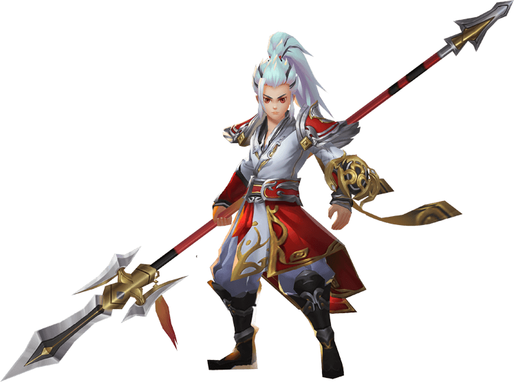

门派展示
- 神机营
- 长歌门
- 桃源谷
-

血厚，攻高，近身作战 神机营的近战将帅气与强悍展现得淋漓尽致。超高的爆发，加上不俗的坦度，加上反伤机制，都让他不管在副本或对战中都占有一席之地。
游戏特色

健康游戏忠告：抵制不良游戏 拒绝盗版游戏 注意自我保护 谨防受骗上当 适度游戏益脑 沉迷游戏伤身 合理安排时间 享受健康生活
网络文化经营许可证：
 闽网文[2018]9590-427号
闽网文[2018]9590-427号  [2018]M-CSG0169号
文明办网文明上网 纠纷处理 游戏适用年龄：16+
未成年人家长监护
[2018]M-CSG0169号
文明办网文明上网 纠纷处理 游戏适用年龄：16+
未成年人家长监护
新广出审[2017]8621号 软著登记号：2016SR368695 粤ICP备11010538号-7网络文化经营许可证 粤网文[2014]2168-467号 新出网证(粤)字049号
Copyright © 2006- 2020 web.4399.com